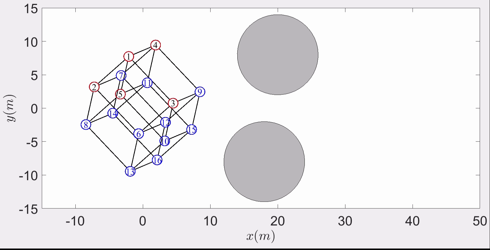
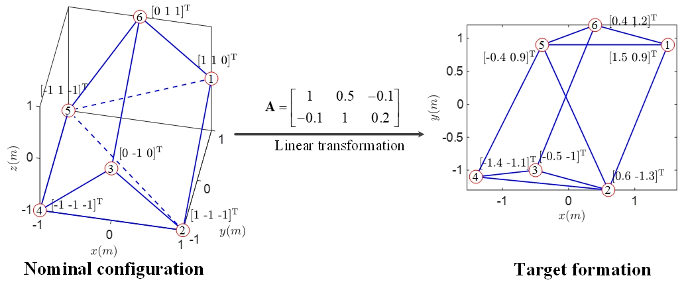
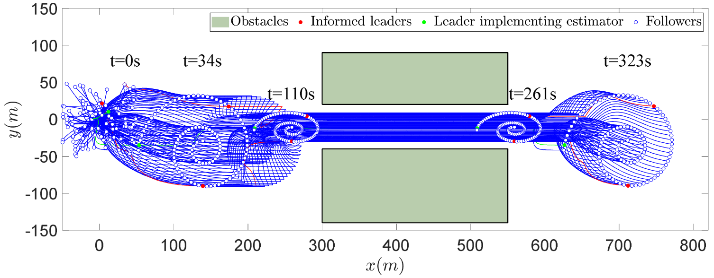
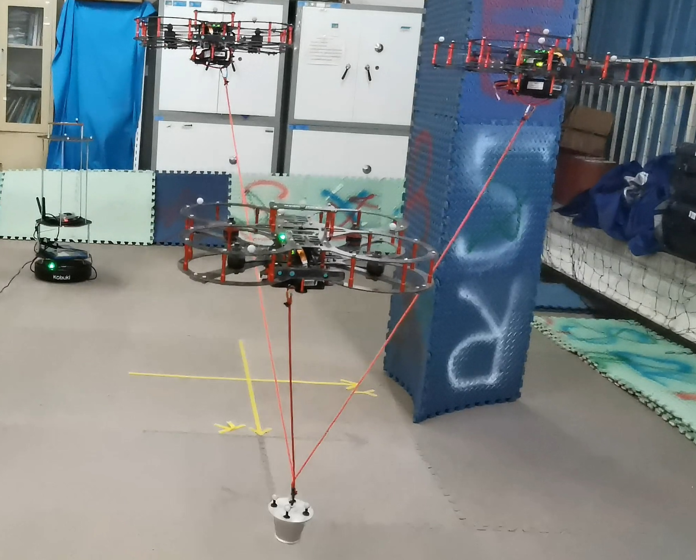
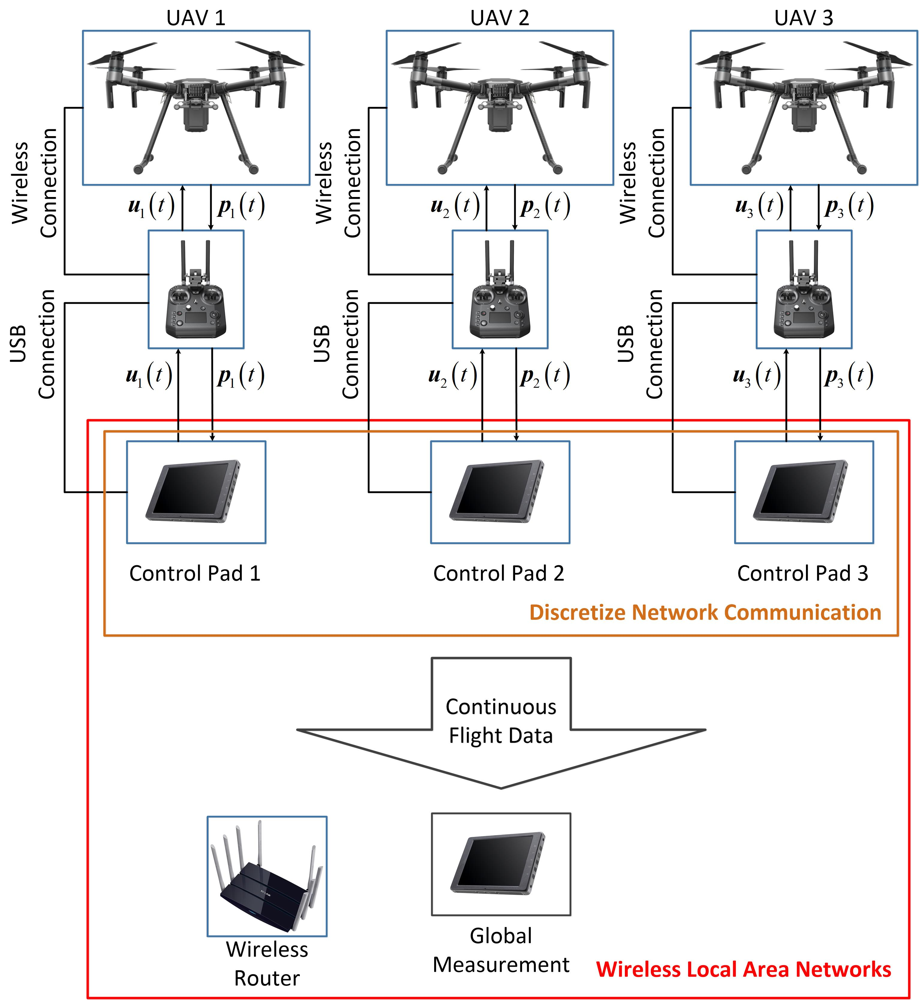
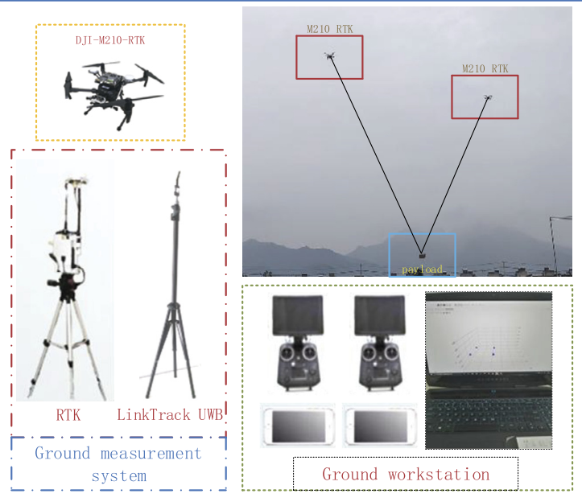
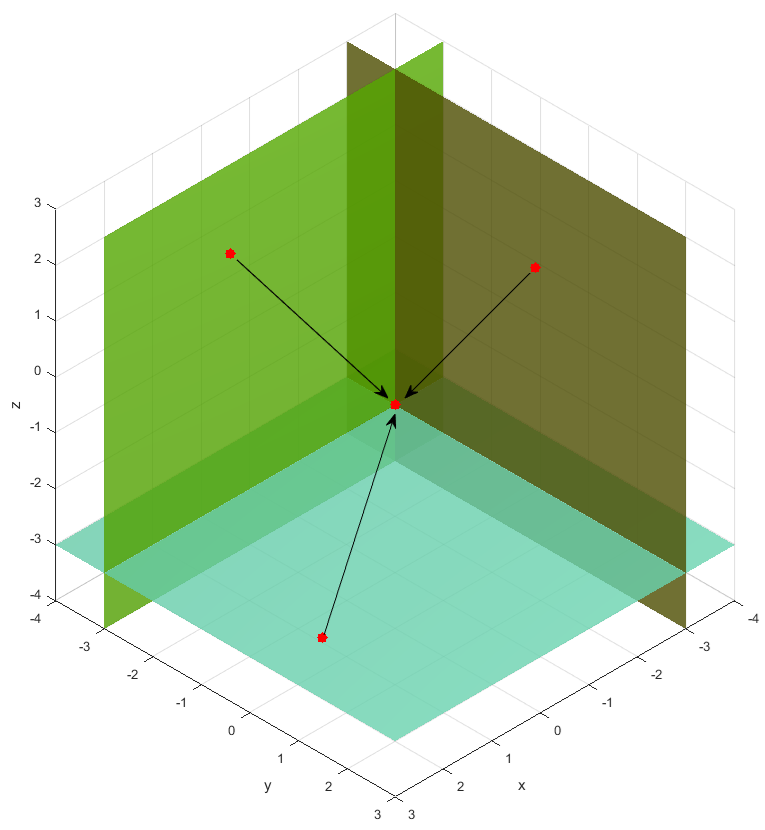
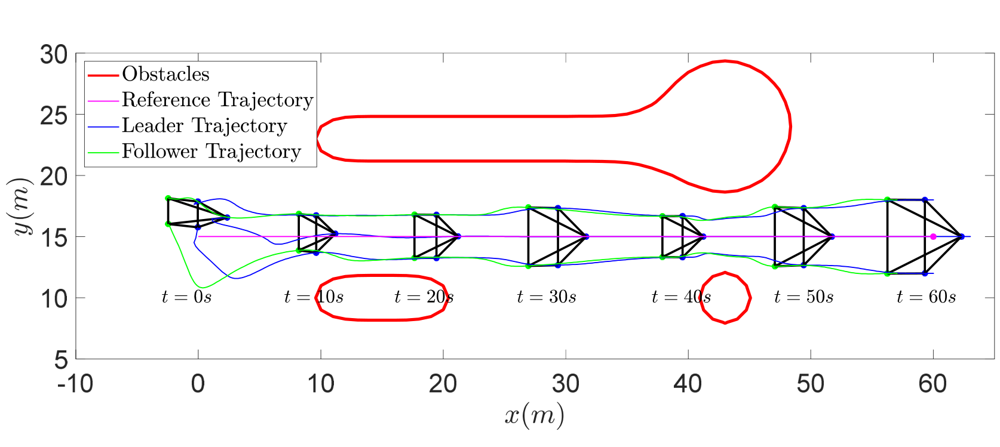
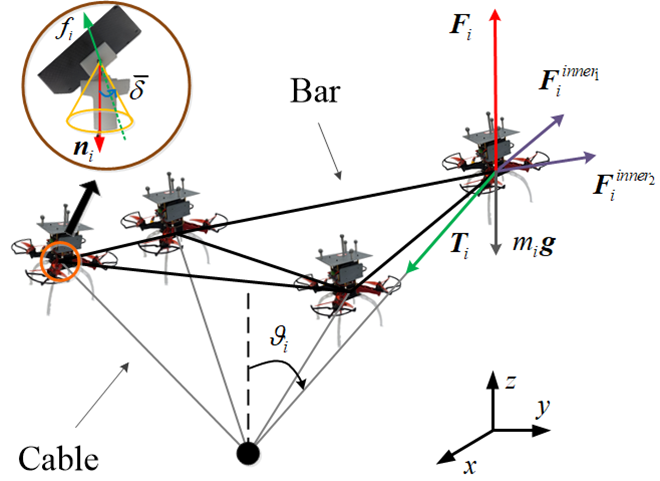
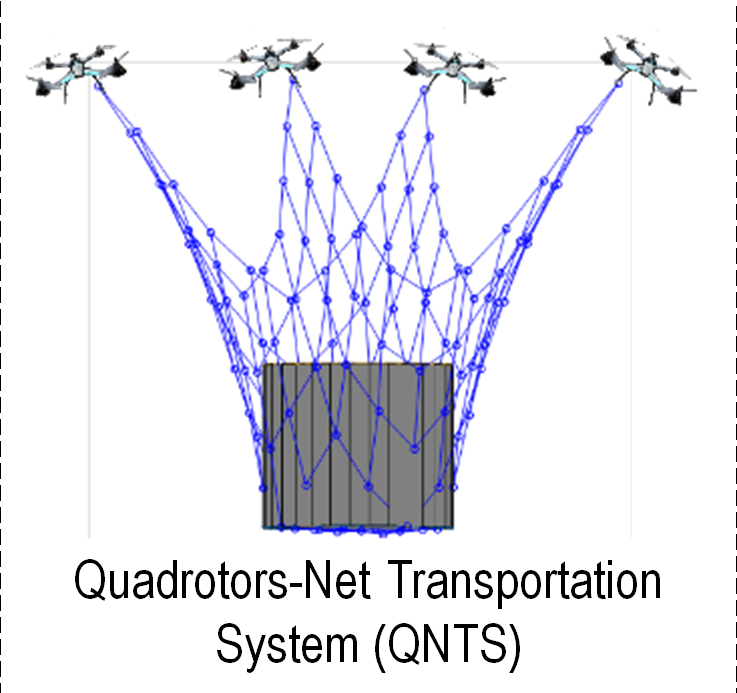

|
Xiaozhen Zhang Xiaozhen Zhang is currently a Postdoctoral Fellow in the Department of Aeronautical and Aviation Engineering at The Hong Kong Polytechnic University, where he works under the supervision of Prof. Hailong Huang. He earned his Doctorate degree in 2025 from Beijing Institute of Technology, advised by Prof. Qingkai Yang. During February to August 2025, he was a Visiting Ph.D. Scholar at Nanyang Technological University, Singapore, working with Prof. Lihua Xie. He previously received his M.S. degree in 2021 and B.E. degree in 2018 from Northwestern Polytechnical University, under the supervision of Prof. Panfeng Huang. His research interests include multi-agent systems, networked control, and swarm robotics. |
Publications
|  |
[7] Cooperative
Shape-Translation Estimation and Control for
Time-Varying Linear Formation This
paper proposes a comprehensive architecture for
time-varying linear formation maneuvers. It
comprises two estimators and a compatible controller.
Two estimators are responsible for obtaining the
time-varying linear formation shape and translation
parameters, respectively. Subsequently, utilizing the
outputs of these estimators, the proposed controller
enables the multi-agent system to track the desired
time-varying formation precisely. |
|
|  |
[6] Linear Formation Control
of Multi-Agent Systems A
new distributed leader-follower control architecture is
proposed, termed linear formation control. The objective
is to navigate a group of agents to reach a specific
target formation, which is a linear transformation of
the pre-defined nominal configuration, whose dimension
can be higher than the agents’ coordinates. The proposed
architecture enables the formation to adjust through
arbitrary linear transformations to accommodate the
environment, offering a diverse range of feasible
formations. |
|
|  |
[5] Joint Estimation and
Planar Affine Formation Control with Displacement
Measurements A displacement-based distributed estimator is proposed for identifying the time-varying affine formation shape matrix. |
|
|
[4] Distributed Variation
Parameter Design for Dynamic Formation Maneuvers With
Bearing Constraints A framework for cooperatively designing the formation scaling and translation parameters is proposed in response to environmental excitations. Excitations perturb the designed stable third-order integrator systems equipped with high-order shared control barrier functions. It generates bounded local formation policy signals. Then, these signals are regarded as local references for distributed average tracking filters, which finally output global formation policies with consensus. |
|
|  |
[3] Formation Planning for
Tethered Multirotor UAV Cooperative Transportation With
Unknown Payload and Cable Length For the tethered aerial transportation system with an unknown payload and cable length, a formation optimization is proposed with the consideration of force distribution on the cables. By utilizing the admittance model, the optimized position/force hybrid relationships are converted into unified desired position signals for multirotor UAVs. This allows to optimize both the cable tensions and positions of UAVs simultaneously. |
|
|

|
[2] Self-Triggered Based
Coordinate Control With Low Communication for Tethered
Multi-UAV Collaborative Transportation A cooperative path following control scheme is proposed for the tethered multi-UAV collaborative transportation system. A self-triggered mechanism is developed to reduce communications during the synchronization of local mission times. |
|
|  |
[1] Analysis, planning and
control for cooperative transportation of tethered
multi-rotor UAVs The robustness of the tethered aerial transportation system is assessed through analyses of the wrench space and capacity margin. By involving insights from such analysis, an optimization is formulated to derive the optimal configuration and trajectories. Subsequently, an extended state observer-based feedback controller is developed for precise trajectory tracking of the UAVs. |
Conference
 |
[5] How Do Robot Swarms
Behave Compliantly? The
concept of "compliance" is introduced to robot swarms. |
|  |
[4] A Distributed Algorithm
for Solving A Time-Varying Linear Equation Distributed solving of a time-varying linear equation is achieved by enforcing local solutions to track the manifolds corresponding to local linear sub-equations and reach the consensus simultaneously. |
|  |
[3] Distributed Decision
Making on Scaling Size for Obstacle Avoidance in Affine
Formation Control A
cooperative formation scaling size decision method using
distributed average tracking technology. |
|  |
[2] Design and Analysis of
Truss Aerial Transportation System (TATS): The
Lightweight Bar Spherical Joint Mechanism A new aerial transportation system is proposed, termed Truss Aerial Transportation System (TATS), which integrates the structural advantage of trusses and rigid frameworks. |
|
 |
[1] Distributed Control for
Cooperative Transportation in Presence of Unknown
Disturbance A new cooperative aerial transportation system is proposed, termed Quadrotors-Net Transportation System (QNTS), which can be used to cope payloads with any shape, size, and number but limited total weight. |
Talks
|
Academic ServiceConference Reviewer: IROS2019, IROS2021, IROS2022, ACC2022, CDC2023, ICIT2024, ICLR2025. Journal Reviewer: IEEE Transactions on Automatic Control, IEEE Transactions on Automation Science and Engineering, IEEE Transactions on Fuzzy Systems, IEEE Transactions on Control Systems Technology, IEEE Transactions on Industrial Electronics, International Journal of Robust and Nonlinear Control, IEEE Transactions on Signal and Information Processing over Networks, Journal of Advanced Computational Intelligence and Intelligent Informatics, Autonomous Intelligent Systems. |
| Last Update 5 October 2025. Thanks to Jon Barron. |